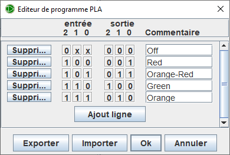

Réseau logique programmable
Réseau logique programmable
| Librairie : | Portes |
| Introduction : | 3.2 |
| Apparence : |

|
Comportement
Le Réseau logique programmable (PLA) va présenter sur sa sortie le résultat d'une fonction logique combinatoir. Si une des entrées est en erreur (E) ou indéfini (U) il considérera que toutes ses entrées sont à 1. Ce composant resemble a une ROM et vous devez entrez la programation de manière très similaire. Il est possible d'exporter et d'importer la programation à partir d'un fichier.
Il existe dans la libririe Entrée/Sortie (extra) un composant PLA qui représente mieux le fonctionnement interne de ceux-ci.
Après avoir définis le nombre de lignes en entrée avec l'attribut Largeur de donnée en entrée et le nombre de lignes en sortie avec l'attribut Largeur de donnée en sortie vous pouvez ouvrir cette fenètre en effectuant un clic droit sur le PLA pour ouvrir le menu contextuel et sélectionnez le menu | Modifier le programme PLA |.

Cliquez sur le bouton Ajouter ligne cela créera la première ligne de votre programme. Vous pouvez deja ajouter d'autres ligne ou le faire au fur et à mesure de l'écriture.
Le bouton Supprimer permet d'effacer la ligne. Vous observez les colonnes de bouton pour programmer les entrées et les colonnes de boutons pour programmer les sorties. Si vous cliquez dessus ils afficherons alternativement 0,1,x. 0 et 1 représente le niveau logique et x signifie sans importance.
Par exemple dans la première ligne de la figure ci-dessus vous voyer la combinaison 0.x.x pour les entrées et 0.0.0 pour les sorties. Cela signifie que si l'entree 2 est à 0 les entrées 1 et 0 n'ont pas d'importance et on délivrera sur les sorties la valeur 0.0.0
La colonne commentaire permet de rajouter un texte qui sera visible sur le PLA quand la combinaison de la ligne est active.
Les boutons Exporter et Importer pemetent respectivement d'exporter le programme ou de l'importer depuis un fichier.
Le bouton OK confirme l'enregistrement du programme et ferme la fenêtre.
Le bouton Annuler oublie le programme et ferme la fenêtre.
Broches (en supposant que le composant est orienté vers l'est)
- Bord ouest :
- Entrée des donnée du composant, sa largeur en bit est définie par l'attribut Largeur de donnée en entrée.
- Bord est :
- Sortie des résultat de traitement, sa largeur en bit est définie par l'attribut Largeur de donnée en sortie.
Attributs
Lorsque le composant est sélectionné ou en cours d'ajout, les touches fléchées modifient son attribut Orientation.
- Orientation
- La direction du composant, sa sortie par rapport à son entrée.
- Largeur de donnée en entrée
- La largeur de donnée en bit de l'entrée.
- Largeur de donnée en sortie
- La largeur de donnée en bit de la sortie.
- Program
- Ouvre le fenètre de programation du contenu.
- Étiquette
- Le texte de l'étiquette associée à la porte.
- Police des étiquettes
- La police avec laquelle l'étiquette doit être rendue.
Comportement de l'outil pousser
Aucun.
Comportement de l'outil text
Permets de modifier l'étiquette associée au composant.
Retour à Référence de la bibliothèque